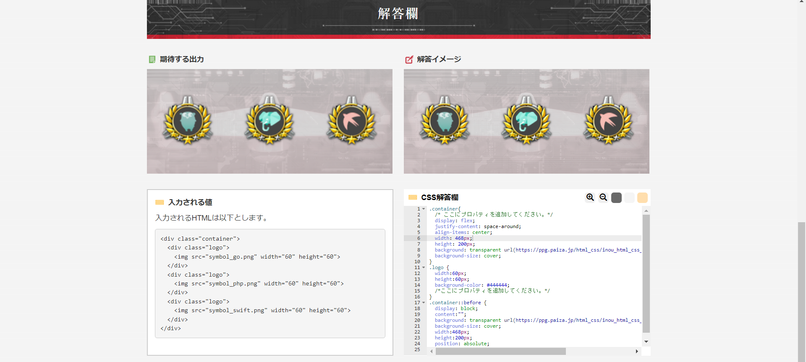
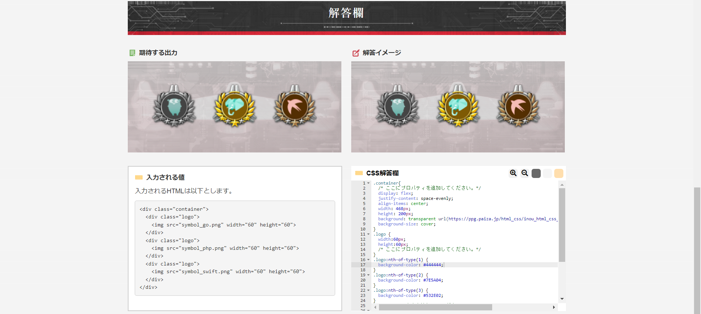

ポイント
logoの背景に参考となる色をbackground-colorで指定、その後justify-contentのspace-around、 align-items: centerで、適切な場所へと配置させることに成功。

logoの背景がそれぞれ違うために、nth-of-type(n) (nは数字)でそれぞれ指定することで解決。 余白がすべて均等となっているところから、justify-content: space-evenlyを使用して解決。